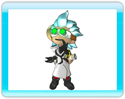
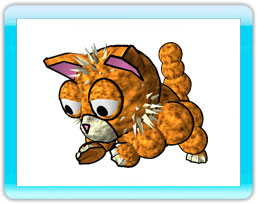

5 |
Doc Clock, Sack y Franklin |
 |
|
Doc Clock
Doc Clock es un inventor brillante y excéntrico que inventa las cosas más increíbles. Desafortunadamente nunca parecen funcionar como deben.
Su objetivo es inventar la tostadora perfecta, pero uno de sus inventos sale mal y transforma a su querido gato Franklin en un cactus plantado en un tiesto. Doc Clock inventa una máquina del tiempo para poder regresar al pasado para evitar el accidente.
Sin embargo, en lugar de llegar al pasado, Doc Clock se encuentra en el futuro sin humanos, en un mundo controlado por locos robots amantes de la naturaleza. Estresada por el esfuerzo de tan largo viaje, su máquina del tiempo explota y dispersa sus piezas millas a la redonda.
Doc Clock debe encontrar todos los componentes para poder reconstruir la máquina del tiempo y salvar a su gato de un futuro con pinchos.
Sack
Sack es la sarcástica mochila robótica de Doc Clock. A Sack no le gusta nada estar siempre sujeto a la espalda de un inventor tan simplón y secretamente planea convertirse en el único gobernante del mundo.
Franklin
Franklin es el gato de Doc Clock. Es fiel, calladito y está ligeramente bien alimentado. Franklin consiguió introducirse en el refugio de Doc por un agujero en la pared y ha estado viviendo de sándwiches de queso tostados medio hechos y fríos desde entonces. |

 |
 |
 |